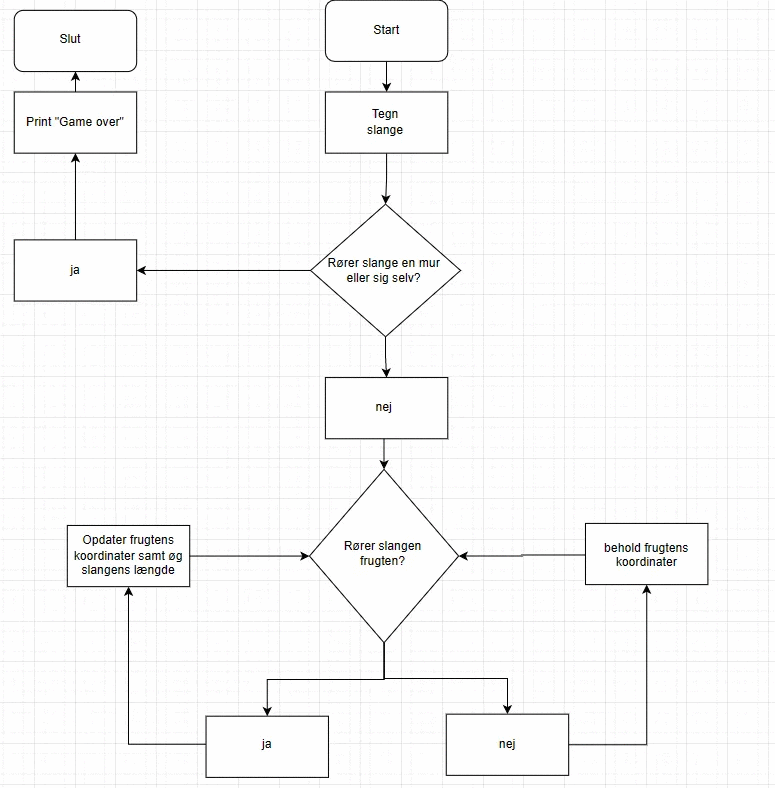

Spil - snape
Projektbeskrivelse:
Vi planlagde at lave et spil, hvor der er en slange, der spiser frugt. Herefter vil slangen vokse. Hvis slangen rammer sig selv, eller kanten af spillet, vil slangen dø, og du skal starte forfra.
Da vi var færdige med at programmere spillet, satte vi spillet til en Makey Makey, som giver en mulighed for at styre spillet i den "virkelige verden" og ikke kun på computeren. Vi gjorde det sådan, at du skulle spille spillet med dine fødder, og du kunne spille multiplayer. Vi valgte, at du skulle spille med fødderne, da det ville tvinge dig til at være aktiv, hvilket også var formålet med opgaven.
Formålet med opgaven var følgende. Da Danmarks Idrætsforbund er meget optaget af, at unge og børn ikke er aktive nok i hverdagen, skulle vi lave et spil, hvor man samtidig skulle være aktiv. Danmarks Idrætsforbund formoder, at årsagen til, at de unge ikke er aktive nok, er at mange sidder stille foran en skærm i stedet for at lege, og derfor ville et spil hvor man skal være aktiv, være en mulighed for, at de unge kan dyrke mere motion.
Gennemgang af relevante kodestumper:

Dette kodestykke beskriver følgende
linje 57: Her bliver der defineret en funktion med navnet "deathloop". som gør man dør i spillet og spillet deraf er slut
linje 59: Her bliver der lavet et "if-statement", som siger noget om, hvis dette sker, så sker dette også
linje 60-65: Disse linje forklare, at hvis slangen kommer ud for et givet areal, vil den dø og man skal starte spillet om. deraf skal slangen befinde sig inde for y-koordinaterne 1-400 og x-koordinaterne 1-400 ellers udløses funktionen deathloop.
linje 66-68: I disse linjer siger, at hvis hoved af slangen "'xCor[0]' og 'yCor[0]'" rammer en anden del af slangen, vil den udløse funktion "deathloop" og slangen vil dø, og man skal starte spillet forfra
dvs. denne del af coden forklare at hvis ens slange rammer sig selv eller rammen af spillet, vil slangen dø og man skal starte forfra
Billede af spillet:

Lav et rutediagram over spillet:

Liste over ting I vil ændre på baggrund af brugertesten:
Baseret på brugertesten ville vi have brugt mere tid på det æstetiske aspekt af vores spil, da det ikke var det smukkeste. Hvis vi havde gjort det flottere, så ville det også være mere spændende at se på, hvilket også ville gøre spillet mere indbydende at spille.
Vores spil + koden:
spillet :D